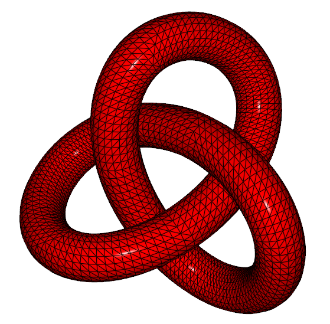

Qt 3D: Wireframe QML Example
A Qt 3D QML application that implements a single-pass wireframe rendering method.

Qt 3D Wireframe Rendering illustrates how to draw a single entity (a trefoil knot) using a custom set of shaders to implement a single-pass wireframe rendering method.
Running the Example
To run the example from Qt Creator, open the Welcome mode and select the example from Examples. For more information, visit Building and Running an Example.
Creating Entities
The renderer aspect looks for entities that have some geometry, a material, and optionally a transformation. These are all specified in the form of subclasses of QComponent that have been exported to the QML engine in the form of Mesh, Material, and Transform. We use these components to create a custom QML item in TrefoilKnot.qml.
We start off by importing the Qt3D 2.0 module that provides the Entity type and value type helpers, such as Qt.vector3d(). We also import the Qt3D.Renderer module that provides the components and other types picked up by the renderer aspect:
import Qt3D.Core 2.0 import Qt3D.Render 2.0
To use components from other aspects, we would need to import the corresponding QML module, too.
We then use an Entity type as the root element of the custom QML type exposing some custom properties just as you would with any other type in QML:
Entity { id: root property real x: 0.0 property real y: 0.0 property real z: 0.0 property real scale: 1.0 property real theta: 0.0 property real phi: 0.0 property Material material
In addition to aggregating components, the Entity type can be used to group child objects together. This is analogous to how the Item type is used in Qt Quick 2.
Specifying Transformations
We instantiate a Transform component and a Mesh component. The Transform component specifies how the renderer should transform the geometry when it is drawn with the OpenGL pipeline. We combine an ordered set of transformations into a single Transform component. This information will be automatically available to our shaders through standard named uniform variables:
Transform {
id: transform
translation: Qt.vector3d(root.x, root.y, root.z)
rotation: fromEulerAngles(theta, phi, 0)
scale: root.scale
}
Loading Dynamic Per-Vertex Data
The Mesh component is very simple. We use its source property to load in a static set of geometry (such as vertex positions, normal vectors, and texture coordinates) from a file in the Wavefront Obj format. This data was exported from the Blender application.
Mesh {
id: mesh
source: "qrc:/assets/obj/trefoil.obj"
}
In addition to the Mesh element, Qt 3D also enables dynamic generation of per-vertex attribute data through C++ hooks that are called by the task-based engine.
Aggregating Components
Simply instantiating components is not enough, however. In order for them to imbue special behavior on an entity, the entity must aggregate the components by means of its components property:
components: [ transform, mesh, root.material ]
This allows components to be shared between multiple entities very easily. In this example, we have components for the transform and mesh that are contained within the TrefoilKnot custom type. The final component, of type Material, is provided by a property of the TrefoilKnot custom type. We will later customize the appearance of the entity.
Rendering from Cameras
We use the TrefoilKnot custom type in main.qml to draw the trefoil knot on the screen.
We use the same import statements as in TrefoilKnot.qml, with the addition of a namespaced import for the Qt Quick module that we will need for animations:
import QtQuick 2.1 as QQ2 import Qt3D.Core 2.0 import Qt3D.Render 2.0
We use an Entity type as the root type simply to act as a parent for its children. In this sense, the Entity type is much like the Item type:
import Qt3D.Input 2.0 import Qt3D.Extras 2.0 Entity { id: root
The RendererSettings component uses the ForwardRenderer type to completely configure the renderer without touching any C++ code:
// Render from the mainCamera
components: [
RenderSettings {
activeFrameGraph: ForwardRenderer {
id: renderer
camera: mainCamera
}
},
// Event Source will be set by the Qt3DQuickWindow
InputSettings { }
]
The BasicCamera type is a trivial wrapper around the built-in Camera type that represents a virtual camera. It has properties for such things as the near and far planes, field of view, aspect ratio, projection type, position, and orientation:
BasicCamera {
id: mainCamera
position: Qt.vector3d( 0.0, 0.0, 15.0 )
}
The Configuration type provides a temporary workaround for having mouse control of the camera while the proper implementation that uses aspects and components is being completed:
FirstPersonCameraController { camera: mainCamera }
It is trivial to use multiple cameras and choose between them using the framegraph for all or part of the scene rendering.
Mapping Materials
Qt 3D has a robust and very flexible material system that allows multiple levels of customization. We use the WireframeMaterial custom type to wrap the Material type:
WireframeMaterial {
id: wireframeMaterial
effect: WireframeEffect {}
ambient: Qt.rgba( 0.2, 0.0, 0.0, 1.0 )
diffuse: Qt.rgba( 0.8, 0.0, 0.0, 1.0 )
We then instantiate the TrefoilKnot type and set the material on it:
TrefoilKnot {
id: trefoilKnot
material: wireframeMaterial
}
The Qt 3D engine in conjunction with the renderer aspect now has enough information to finally render our mesh using the material we specified.
Using Animation Elements
We use the animation elements provided by Qt Quick 2 to animate the properties of the TrefoilKnot and WireframeMaterial types. The properties of the components of a type are updated by using the QML property binding mechanism:
QQ2.SequentialAnimation {
loops: QQ2.Animation.Infinite
running: true
QQ2.NumberAnimation {
target: wireframeMaterial;
property: "lineWidth";
duration: 1000;
from: 0.8
to: 1.8
}
QQ2.NumberAnimation {
target: wireframeMaterial;
property: "lineWidth";
duration: 1000;
from: 1.8
to: 0.8
}
QQ2.PauseAnimation { duration: 1500 }
}
The property updates are noticed by the QNode base class and automatically sent through to the corresponding objects in the renderer aspect. The renderer then takes care of translating the property updates to new values for uniform variables in the GLSL shader programs.
Run the example to view the trefoil knot with the width of the wireframe lines pulsing. All the heavy lifting is being done by the GPU. The CPU only has to run the property animations and to translate the scenegraph and framegraph into raw OpenGL calls.
It is also possible to animate on the GPU via a custom shader program and material.